新內容 R3：原尺寸手機畫面
所有圖片均為 390×844 執行畫面，按原尺寸並排，不做合成或後製標註。此頁為離線文件，非遊戲介面。五人遮字排序、兒童試玩、原生裝置與 Muse 獨立評分仍為 BLOCKED。
① 持續煞車：開始傾斜、明顯傾斜、停穩回復
phone-cake-hard-brake-1.png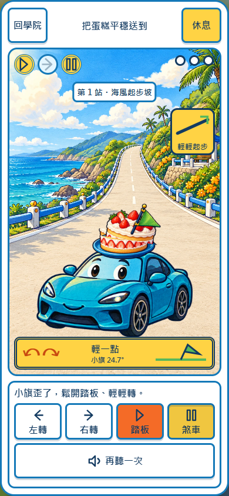
phone-cake-hard-brake-2.png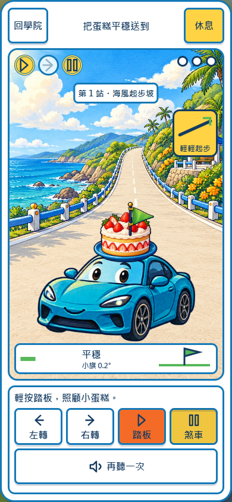
phone-cake-hard-brake-3.png
① 先鬆踏板、低速煞停與回穩
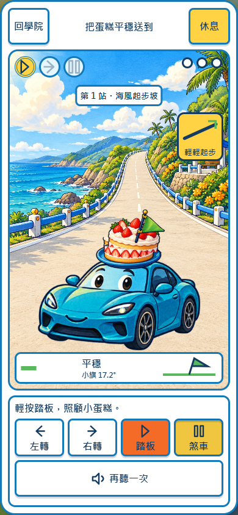
phone-cake-gentle-brake-1.pngphone-cake-gentle-brake-2.png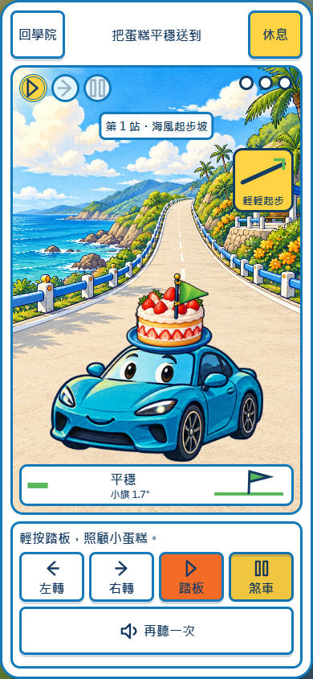
phone-cake-gentle-brake-3.pngphone-cake-steady.png② 三站與分蛋糕
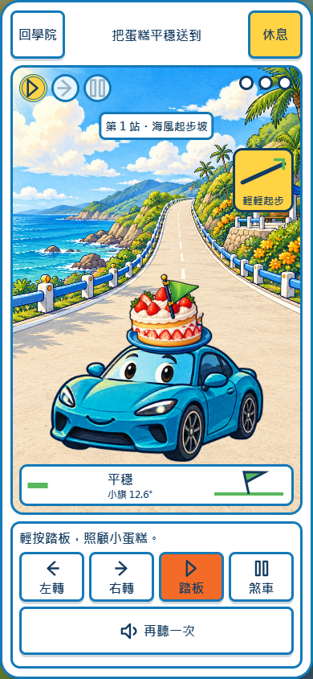
第 1 站：海風起步坡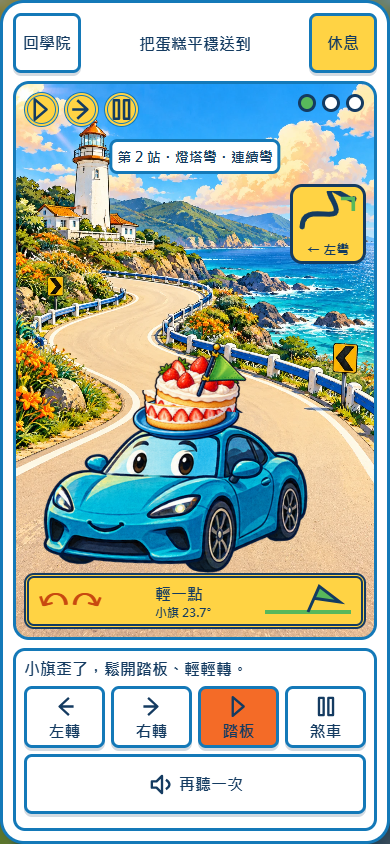
第 2 站：燈塔連續彎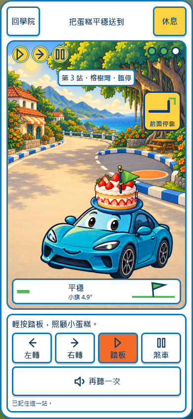
第 3 站：榕樹臨停灣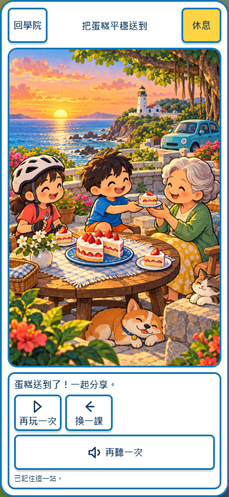
切片、遞盤、一起分享③ 三位過街朋友與下方操作列
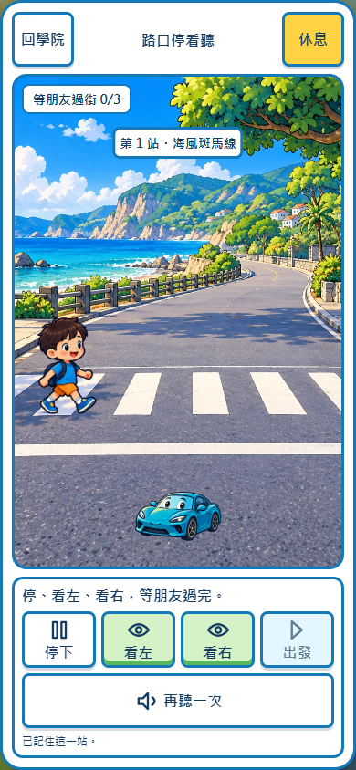
行人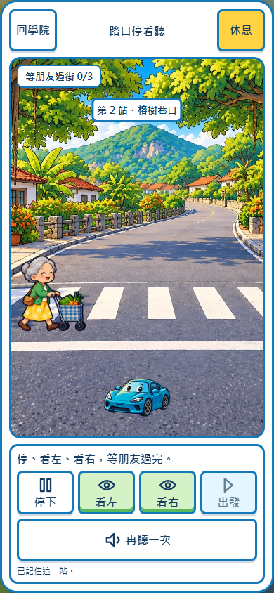
菜籃奶奶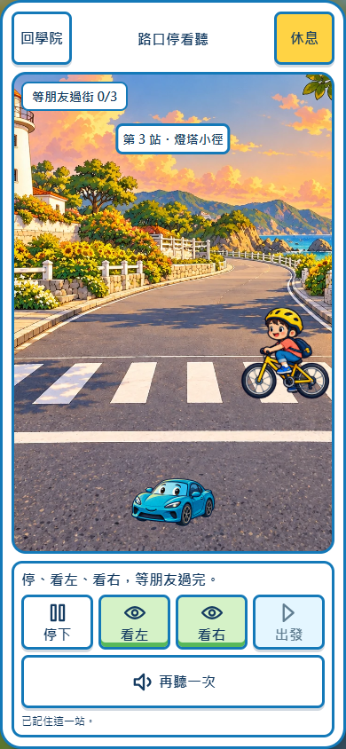
腳踏車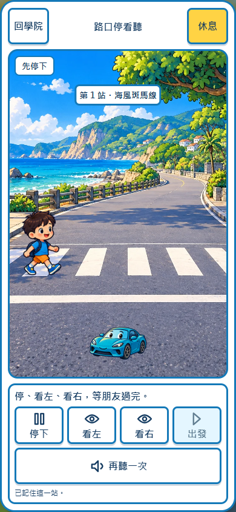
提早出發，留在原地④ 同一橫向月台：錯／對停靠與上客
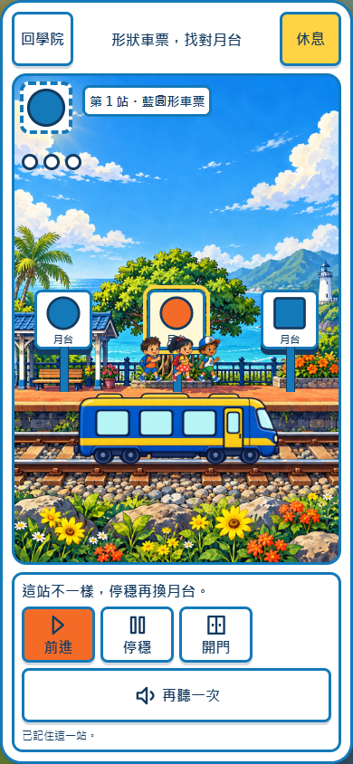
同形異色，不能開門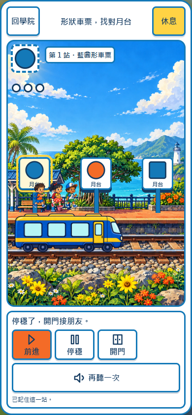
雙線索相同，停穩開門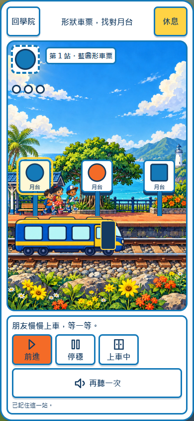
上客第 1 格上客第 2 格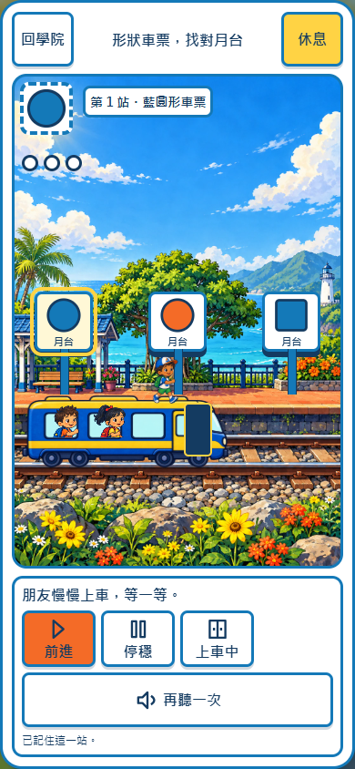
上客第 3 格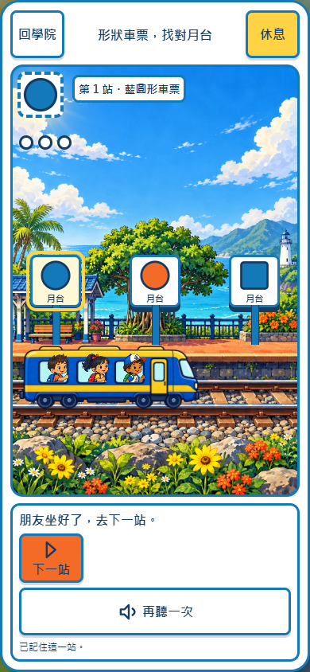
三位落座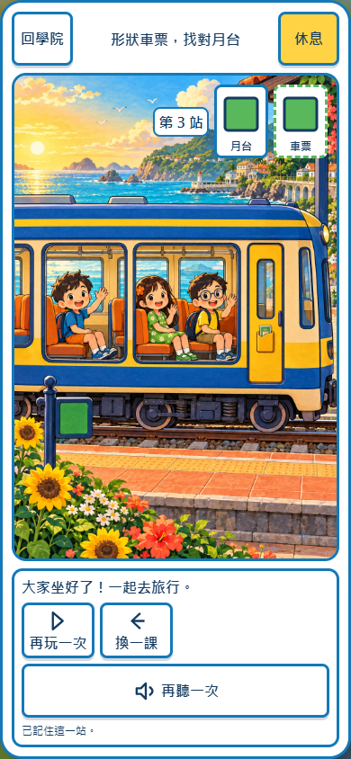
綠方站牌、綠方車票與完成結果⑤ 相同的阿路與字體
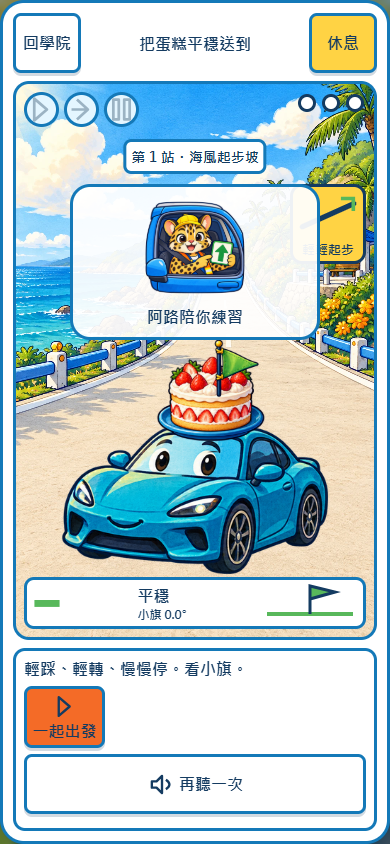
蛋糕課開頭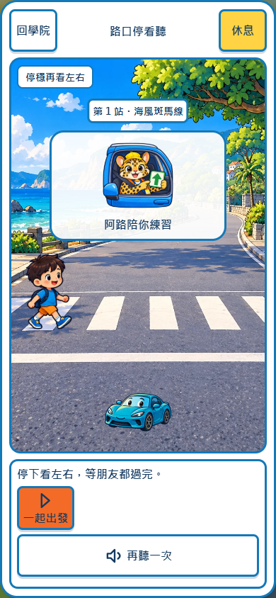
路口課開頭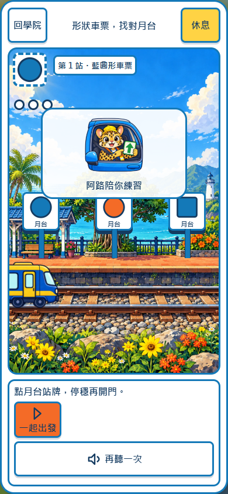
車票課開頭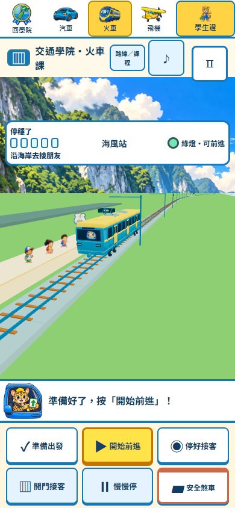
既有 3D 火車駕駛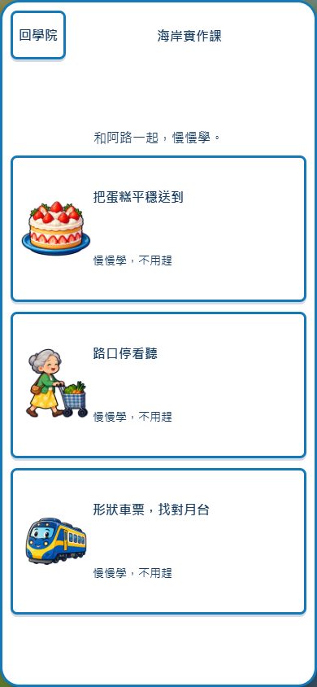
選課無殘影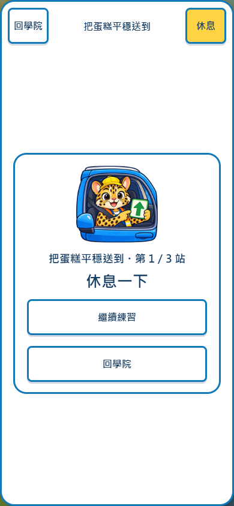
休息有阿路、課名與目前站次